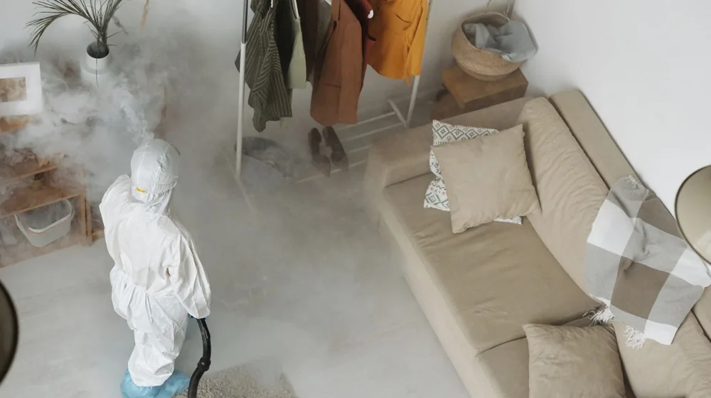

맨날 생기는 벽지 곰팡이, 확실히 뿌리 뽑는 3단계 제거법
사진: Matilda Wormwood / Pexels (무료 이미지, 출처 표기)
왜 닦아도 또 생길까? 곰팡이의 비밀

눈에 보이는 곰팡이를 물걸레로 슥슥 닦아내고 안심하셨나요? 안타깝게도 이는 곰팡이 포자(종자 역할을 하는 미세한 세포)를 공기 중에 퍼뜨려 상황을 더 악화시킬 뿐입니다. 곰팡이는 고온다습한 환경에서 벽지나 실리콘 내부에 깊숙이 뿌리를 내리는 성질이 있습니다.
따라서 겉 표면만 닦아내기보다는, 곰팡이의 뿌리 조직인 균사까지 완전히 사멸시키는 화학적 접근이 필요합니다. 완벽한 박멸과 환경 개선이 동반되지 않으면 곰팡이는 반드시 같은 자리에 다시 피어납니다.
락스 vs 전용 제거제, 무엇을 써야 할까?
곰팡이를 지울 때 가장 고민되는 것이 세제 선택입니다. 가장 흔히 쓰는 희석 락스와 시중의 전용 제거제는 각각 장단점이 명확하므로 상황에 맞게 선택해야 합니다.
합지 벽지나 실리콘처럼 세제가 흘러내리기 쉬운 곳에는 점성이 있는 겔(Gel) 타입의 전용 제거제를 쓰는 것이 훨씬 효과적입니다. 반면 타일 틈새나 넓은 시멘트 바닥은 희석한 락스를 분사하는 것이 경제적입니다.
안전하고 확실하게! 곰팡이 제거 3단계 방법
세제를 골랐다면 이제 안전하게 제거할 차례입니다. 곰팡이 독소와 세제 가스로부터 몸을 보호하면서 효과를 극대화하는 3단계 절차를 꼭 준수해 보세요.
1단계: 보호구 착용 및 환기
공기 중으로 날아다니는 포자가 호흡기로 들어오는 것을 막아야 합니다. 반드시 마스크와 고무장갑을 착용하고, 방 안의 창문을 앞뒤로 열어 맞바람이 통하도록 환기 시스템을 확보하세요.
2단계: 제거제 도포 및 반응 대기
곰팡이가 피어난 자리에 준비한 세제를 바르거나 분사합니다. 억지로 문지르기보다는 화학 반응이 일어나 균사까지 녹아내릴 수 있도록 최소 1시간에서 2시간 정도 방치해 두는 것이 좋습니다.
3단계: 잔여물 제거 및 바짝 말리기
물걸레나 솔로 죽은 곰팡이 찌꺼기를 깨끗하게 닦아냅니다. 그 뒤 헤어드라이어나 선풍기를 동원해 해당 부위를 완전히 건조해야 합니다. 미세한 습기라도 남아 있으면 며칠 뒤 곰팡이가 다시 고개를 듭니다.
다시는 안 생기게 막는 핵심 재발 방지책
열심히 지운 곰팡이가 다시 생기지 않도록 하려면 실내 환경을 통제해야 합니다. 가장 중요한 지표는 역시 '습도'입니다. 실내 상대습도는 사계절 내내 40%에서 60% 사이로 유지하는 것이 이상적입니다.
겨울철 외부 온도 차이로 벽면에 물방울이 맺히는 결로(이슬 맺힘) 현상이 잦다면 단열 벽지를 시공하거나, 방균 페인트(곰팡이 성장을 막아주는 기능성 도료)를 덧칠해 주는 것이 좋습니다. 원천적인 습기 차단만이 곰팡이 연쇄 고리를 끊는 유일한 방법입니다.
일상에서 실천하는 곰팡이 예방 체크리스트
- 하루 최소 2회, 30분씩 마주 보는 창문을 열어 맞환기하기
- 샤워 직후에는 욕실 문을 닫은 채 환풍기를 1시간 이상 가동하기
- 가구와 벽면 사이에 최소 10cm의 틈새를 두어 공기 순환로 확보하기
- 옷장이나 신발장 구석구석에 염화칼슘 성분의 제습제 비치하기
단, 건물의 심각한 누수나 구조적인 결로로 인한 곰팡이는 단순한 예방 요령만으로 해결하기 어렵습니다. 이 경우에는 전문 시공 업체를 통해 진단을 받아보시길 권장합니다.
🔗 이 글도 함께 보면 좋아요: 매번 입을 옷 없는 이유? 3단계 미니멀 옷장 체크리스트
관련 추천 상품
이 포스팅은 쿠팡 파트너스 활동의 일환으로, 이에 따른 일정액의 수수료를 제공받습니다.
한눈에 보는 상품 목록
겔 타입 실리콘 곰팡이 제거제
뿌리는 곰팡이 방지 스프레이
친환경 방균 페인트